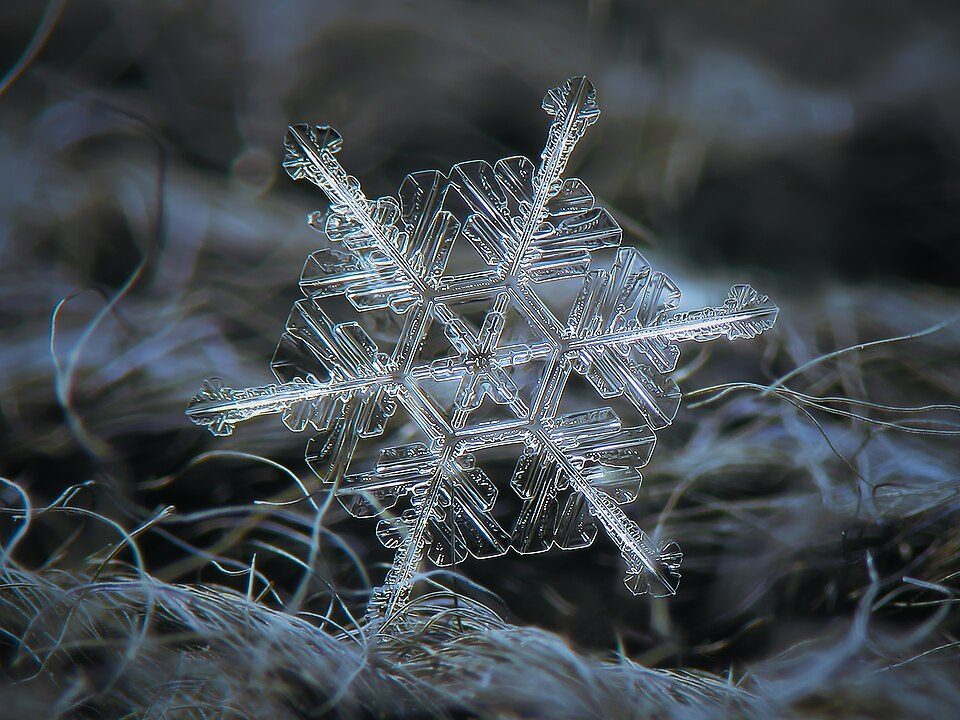

Amazing phenomena
Rainbows, unique snowflakes, geysers, fire tornadoes, raining fish and the smell of rain: the science behind everyday wonders.


Nature has tricks that look like magic. Almost all of them have a scientific explanation that is just as amazing.
The rainbow
A rainbow appears when the Sun is behind us and rain is in front. Each drop acts like a tiny prism: light enters, reflects off the back of the drop and leaves split into colours, always at an angle of about 42°. That is why a rainbow is really a full circle: from a plane you can see all of it. And each person sees their own rainbow, made by different drops. Sometimes a double rainbow appears, with its colours reversed (more in optical phenomena).
No two snowflakes are alike
A snowflake is made of up to a quintillion water molecules arranged in a six-armed shape. As it falls, each flake passes through zones of different temperature and humidity that change how it grows. Because each one's journey is unique, it is practically impossible for two flakes to be identical. The first person to photograph them, in 1885, was an American farmer, Wilson Bentley, who captured more than 5,000.


Geysers
A geyser is a hot spring that shoots out jets of boiling water and steam. The water is heated underground by magma until the pressure makes it burst out. The word comes from Geysir in Iceland. Nearby Strokkur erupts every few minutes, and Yellowstone's Old Faithful roughly every hour and a half.
The smell of rain
That smell of wet earth is called petrichor. It comes mainly from soil bacteria that make a substance called geosmin, and raindrops fling it into the air as tiny aerosols. Our sense of smell is extraordinarily sensitive to it: we can detect it at a few parts per trillion, better than a shark detects blood.
Raining fish and frogs
There are historical records of showers of fish, frogs and worms. The most accepted explanation is waterspouts: tornadoes over water that suck up small animals and drop them kilometres away. In Yoro, Honduras, a "rain of fish" festival is held, as locals say it happens almost every year.
Catatumbo lightning
Over the mouth of the Catatumbo River at Lake Maracaibo (Venezuela), thunderstorms occur nearly 300 nights a year, with dozens of flashes a minute. It is the place with the most lightning in the world. Sailors used it as a natural lighthouse.
Bioluminescence
On some beaches, stirring the water at night makes it glow blue. It is microscopic algae, dinoflagellates, that give off light when disturbed. Many deep-sea animals also make their own light, as do fireflies and some fungi.
Sea of clouds
When a layer of low cloud is trapped beneath warmer air, mountains poke out like islands in a white ocean. In the Canary Islands, the sea of clouds brought by the trade winds is so common that it feeds moisture to the laurel forests.
Videos to understand it better
- The World's Most Stunning Natural Phenomena | BBC Earth ScienceBBC Earth Science · 341K views
Videos are from YouTube and belong to their creators. They only load when you click them. See all videos →